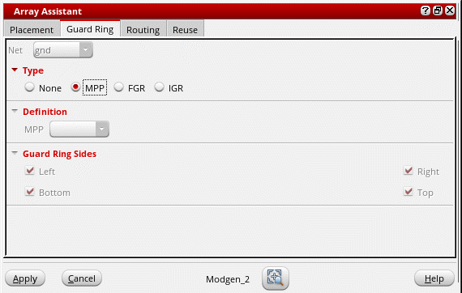
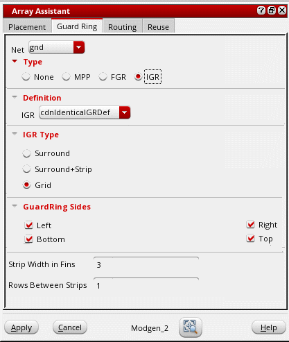

Creating Guard Rings Using the Array Assistant
(Layout EXL and Higher Tiers) Before creating guard rings, ensure that their definitions are added to the technology file.
The options to create Identical Guard Rings (IGRs) are available only if the PDK that you are using is configured to support identical guard rings.
- Open the Guard Ring tab of the Array Assistant.
-
Select one of the following types of guard rings:
-
Multipart Path (MPP): The tool supports only surround MPP guard rings. Although the sides are listed, you cannot control the sides along which the guard ring is added.
-
Fluid guard ring (FGR): The Create Guard Ring form is displayed. You can select a Net connection for the guard ring. Typically, in Layout XL, FGRs can be created in four different ways: by drawing a path, rectangle, or polygon, or by using the wrap mode. Each of these different modes represent a tab on the Create Guard Ring form. However, the Array Assistant only supports creation of FGRs in the Wrap mode. In this mode, an FGR is created around the objects you select. The fluid guard ring parameters are stored in the Modgen constraint.
For information about the options on the Wrap tab of the Create Guard Ring form, see Wrap Mode. - Identical guard ring (IGR): The IGR definition is provided by the PDK. See Creating an Identical Guard Ring Using the Array.
-
Multipart Path (MPP): The tool supports only surround MPP guard rings. Although the sides are listed, you cannot control the sides along which the guard ring is added.
- Specify the required guard ring settings.
- Click OK.
A guard ring as per your definition is generated in the layout canvas.
Related Topics
Creating an Identical Guard Ring Using the Array
Automatic Generation of Modgens using the Array Assistant
Modgen Placement Settings in the Array Assistant
Defining Modgen Topology Settings Using the Array Assistant
Reusing Modgen Templates Using the Array Assistant
Return to top